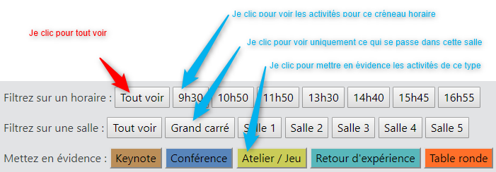
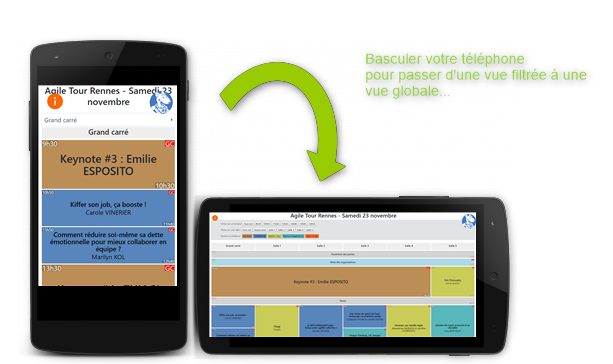
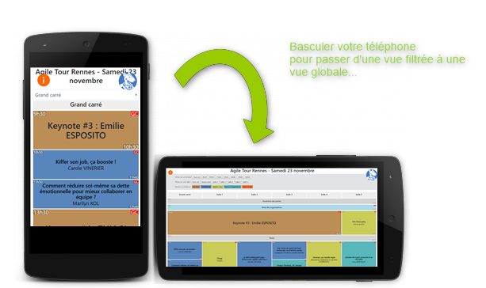
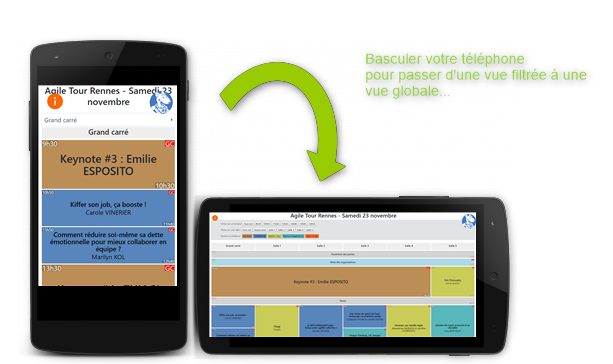
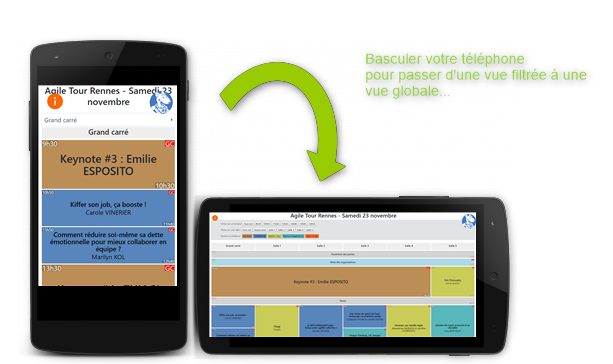

Comment utiliser et lire ce programme ?

 



70% des changements organisationnels échouent.
Vous avez sûrement entendu ce chiffre à de nombreuses reprises pourtant… Cette statistique, répétée à l’unisson par de nombreux conférenciers, est un mythe. Un mythe tenace qui a un effet dévastateur : il rend, dans l’imaginaire collectif, le changement au sein d’une organisation difficile voire impossible, il impose inconsciemment le suivi scrupuleux d’un framework (SAFe, LeSS, Nexus…) pour éviter tout échec. Seulement, imiter aveuglément un framework est un piège.
Bien lancer et réussir la transformation de son entreprise ne dépend pas d'un cadre ou d'une méthode. C'est un effort, long certes, mais à la portée de tous à condition de se poser les bonnes questions.
Objectif :
Démystifier le changement organisationnel et présenter les bonnes questions à se poser au bon moment pour réussir une transformation.
 Denis Migot - @DenisMigot
Denis Migot - @DenisMigot
Je suis coach organisationnel et formateur avec 15 années d’expérience aussi bien en France qu'au Canada. Je suis également l’auteur du Guide de la transformation organisationnelle à l’usage des managers et dirigeants ainsi que de nombreux articles publiés chez Forbes, Les Echos, l’Usine Digitale ou encore le Journal du Net
Découvrez le rôle de Product Owner en vous glissant dans la peau d’un gérant de parc attraction.
Prioriser astucieusement votre backlog pour maximiser votre score ... et construisez votre parc sprint après sprint.
Mais attention, comme dans la vraie vie, votre capacité n’est pas toujours celle estimée, les anomalies guettent et peut-être serez-vous amener à re-prioriser
Créé par nous mêmes et expérimenté à plusieurs reprises, Agil'o Park est un serious game basé sur un plateau et des cartes permettant de se sensibiliser à la facette de priorisation du métier de Product Owner.
Il n'y a pas de bonne ou mauvaise priorisation mais une définition d'une stratégie initiale et l'adaptation aux aléas ... l'agilité quoi !
Après avoir évolué pendant une dizaine d’années dans le développement IT en tant que développeur, architecte, lead dev, Antony a fait le grand saut dans l’agilité en 2012. Manager reconnu chez Voyages-SNCF, il a ensuite enrichi sa boîte à outils avec la facilitation et le Design Thinking. Son point fort ? Accompagner à la fois les Product Owner dans la construction de leur vision et l’élaboration de leur backlog, soutenir les équipes de réalisation dans leurs démarches d’amélioration continue et les orienter vers une démarche DevOps, conseiller les managers dans leur changement de posture. Facilitateur, coach, formateur, il explore tous les jours de nouvelles pratiques pour rendre les équipes plus agiles et performantes.
Je mélange culture agile, Management 3.0 et facilitation UX, pour dynamiser le quotidien des équipes et des organisations de tous domaines (informatique, RH...) dans la conception d'un produit ou la mise en place d'une organisation.
Et si le manifeste agile avait oublié un aspect majeur de la pratique du développement, et si on avait oublié le plus important : la technique ! Développer un logiciel fonctionnel et bien conçu, voici l’objectif des Craftsmen. Nous allons voir ensemble, comment diffuser ces nouvelles valeurs au sein de vos équipes.
Rappeler l’importance d’un code maintenable et fiable.
Expliquer les principes majeurs du Software Craftsmanship.
Finir par une bonne punchline !
Nassim Masmoudi, Fan de football et de basket, je travaille à Infotel depuis presque 5 ans. Tech Lead depuis un an et demi. C'est à ce moment que je découvre le Software Craftsmanship. Je partage mon temps entre le développement sur des projets et la diffusion de mes connaissances. Mon but est d'accompagner tout le monde afin d’élever le niveau.
Quand une relation est difficile, on aimerait disposer d’une télécommande pour changer l’autre !
Malheureusement ( ou pas !) cela n’est pas possible.
Au travers d’études de cas, cet atelier propose pour résoudre ce genre de problèmes de vous initier au modèle d'intervention systémique et stratégique de Palo-Alto .
Il s’agit d’abord de comprendre les processus dysfonctionnels relationnels. Ensuite, d’adopter une stratégie spécifique d’amélioration de la situation.
Nous utiliserons pour cela une grille de représentation des interactions et des boucles de feedback. Nous verrons en particulier comment la compréhension des tentatives de solutions infructueuses nous amènera à proposer des prescriptions paradoxales.
Découvrez le réducteur de complexité proposé par le modèle de Palo-Alto et l’apport fondamental que constitue l’approche stratégique.
Vous êtes familier de l’agilité, mais vous ne connaissez pas la systémique. Le manifeste agile mentionne l’importance privilégiée à accorder aux "Individus et à leurs interactions". Le modèle de Palo-Alto propose justement une démarche stratégique focalisée sur l’aspect interactionnel des dysfonctionnements.
Vous ne connaissez ni la systémique, ni l’agilité, mais vous êtes curieux d’en savoir plus sur une démarche non normative, considérant que tout problème est une question de perception de sa relation à soi-même, aux autres ou au monde. Venez découvrir en pratiquant sur des cas du monde de l’entreprise.
Catalyseur respectueux de transformation continue et systémique J'aide les personnes, les collectifs, les organisations à mobiliser leurs ressources pour s’harmoniser et atteindre leurs objectifs. J'accompagne le changement de perception, de comportement et de ressenti, pour plus de fluidité dans l’incertitude. Contribuer à faire émerger un nouvel univers de la possibilité. Encourager l’harmonie. Voir les yeux briller. Voilà ma mission.
Vous avez déjà entendu parler de Facilitation Graphique, Sketchnoting, Scribing, Facilitation Visuelle, Mindmapping, Pensée Visuelle, etc., et vous êtes perdus ?
Vous avez décidé de vous mettre à la Facilitation Graphique mais vous avez le syndrome de la page blanche ?
Alors cet atelier est fait pour vous !
"Seul on va plus vite, ensemble on va plus loin", ensemble nous allons imaginer comment intégrer la Facilitation Graphique dans notre quotidien : à la maison, au travail, dans vos activités préférées... Pour enfin se lancer et ne plus s'arrêter !
Après un rappel des bases et principes, nous alternerons travail par petits groupes et échanges avec le collectif pour faire émerger des idées et imaginer ensemble comment intégrer la Facilitation Graphique dans notre quotidien.
Analyste fonctionnelle et maman de 3 enfants, je suis convaincue de l’efficacité des illustrations pour transmettre un message en racontant une histoire. Au travail comme à la maison je pratique la facilitation graphique dans mon quotidien depuis plus de 2 ans. Au travail pour analyser et synthétiser un besoin utilisateur, faciliter les échanges et faire émerger des idées. A la maison pour apprendre les leçons avec les enfants et l’organisation de la famille. J’organise et anime des ateliers sur la facilitation graphique, j’ai participé à Agile Tours Rennes 2018 et Agile Laval 2019.
Aujourd'hui sur des missions de pilotage et de Scrum Master au sein d'une ESN, je suis attirée depuis toujours par tout ce qui touche au graphisme, aux feutres... Depuis que j'ai découvert la facilitation graphique, je l'utilise au quotidien pour ma prise de notes ou l'animation de réunions : aller à l'essentiel & jouer avec le graphisme pour plus de clarté.
Ensemble, nous co-animons depuis 2 ans des ateliers autour de la Facilitation Graphique, nous avons participé à Agile Laval en tant qu'animatrices et scribeuses et notre objectif est de rendre la facilitation graphique accessible à tous :)
La performance collective dans un contexte client/fournisseur, vous y croyez ?
Nous oui :)
Nous souhaitons vous raconter l’histoire de notre projet de son démarrage avec Scrum il y a 10 ans à sa transformation technique aujourd’hui au travers de nos expériences de client et de fournisseur.
Nous aborderons nos réussites et nos difficultés au travers de thèmes tel que Scrum et Kanban, Story Map et UAT, Teambuilding et Serious game.
Intégré au sein d’un groupe national de télécommunications depuis 15 ans, j’ai connu l’émergence de l’agilité au sein de nos organisations.
J’ai occupé successivement dans ce contexte plusieurs rôles, acteur du suivi opérationnel, business analyst, product owner et responsable d’application avec la volonté de toujours conserver un fort niveau d’agilité malgré les contraintes d’organisation.
Je suis persuadé que l’agilité n’est pas qu’une collection d’outils mais surtout le développement d’un état d’esprit permettant une atteinte facilitée de nos objectifs.
Je souhaiterai partager avec vous le retour d’expérience de sa mise en œuvre, ayant contribué au succès de notre projet.
Développeur, support opérationnel, Scrum Master, ... : depuis 7 ans chez Sopra Steria, je change régulièrement de casquette sans jamais quitter l'Agilité.
J'accompagne aujourd'hui une équipe dans sa transformation et notamment dans son passage à l'échelle.
Formations, sensibilisation, serious game et ateliers. C'est avec beaucoup d'enthousiasme que je partage ou facilite auprès d'autres équipes.
Passionné de tous les thèmes qui gravitent autour de l'Agilité, j'aurai plaisir à partager avec vous le retour d'expérience du projet sur lequel j'ai le plus expérimenté.
Vous est-il déjà arrivé de parler du sens de la vie avec un chaman ? Vous pourriez être surpris de sa réponse car pour un chaman cette question n’a pas de sens. Il ne la comprend pas et il ne comprend pas non plus comment nous pouvons nous la poser. Pour eux, être est le sens. Il n’y a rien d’autre.
Pourtant, nous sommes bien confrontés à cette question du sens dès qu’il s’agit de fédérer des équipes autour d’une performance collective. Quel sens ? Comment « donner du sens » ?
Saint Exupéry disait poétiquement : « Si tu veux construire un bateau, ne rassemble pas tes hommes et femmes pour leur donner des ordres, pour expliquer chaque détail, pour leur dire où trouver chaque chose… Si tu veux construire un bateau, fais naître dans le cœur de tes hommes et femmes le désir de la mer. »
Et si cette question du sens faisait plus appel à notre cœur qu’à notre tête ? Si l’enjeu c’était plus de résonner que de raisonner ?
J’ai eu la chance de participer à des aventures humaines au sein de sociétés en croissance et j’ai aimé ces aventures. J’ai toujours été passionnée par deux questions : comment trouver sa place au sein de l’entreprise & comment créer un collectif performant ? Aujourd’hui, j’accompagne les individus et les organisations à trouver leurs propres réponses à ces deux questions. »
Ingénieur, diplômée d’école de commerce et coach certifiée, j’ai évolué dans l’entreprise à des postes de marketing, communication et RH. J’ai choisi l’approche Coach and Team pour me former au coaching.
Bac littéraire. Etudes de langues, communication, marketing, management... Un extra-terrestre parmi les Devs. Et si la performance collective passait surtout par la diversité ? Le métier vs. les équipes IT, une absence totale de communication ou, au mieux, des conflits. Comment se nourrir des forces des uns et des autres, faire de nos biais respectifs des armes... de convergence ?
Pourquoi suis-je passée d’une Direction de la Communication (N-2 du DG), à un Centre de Compétences dans une ESN (une ressource parmi 600 autres) ? Pour m’éloigner des travers de la première et rejoindre un univers que je pensais plus Agile.
Je peux vous raconter ce que j’ai perdu et ce que j’ai acquis à titre individuel (spoiler alert : aucun regret !) mais j’aimerais aussi, surtout, partager ce que je souhaite, ce en quoi je crois pour que chaque professionnel puisse s’épanouir en se focalisant sur l’essentiel : la valeur apportée à l’utilisateur.
J’ai longtemps vécu à l’étranger, et toujours aimé évoluer dans des environnements marqués par la diversité. J'ai démarré dans la Communication et le Marketing, travaillé pour et/ou avec le Commerce, la Qualité, la DSI, les RH et des marques. Outre la valeur qu'elle apporte à l'entreprise et à l'utilisateur, je suis convaincue qu'une démarche "Produit" est un excellent point de départ pour amener une autre manière de travailler, susciter l’engagement de professionnels de différents horizons, favoriser le développement individuel et collectif. C'est celle qui m'a fait (au départ sans le savoir) tomber dans la marmite agile, il n'y a pas si longtemps... Car finalement, de la production de contenus à la conception logicielle, de la sensibilisation au conseil, de Google Analytics au pilotage d'équipe, il n'y a qu'un pas !
Venez découvrir en construisant des animaux en Légo comment améliorer votre façon de donner du feedback en toute circonstance.
L’atelier simulera le cadre d’une revue de code en binôme avec l’objectif de donner un feedback bienveillant et constructif sur ce que votre binôme a produit. Sur le modèle du TDD nous ajouterons à chaque étape des contraintes pour améliorer petit à petit notre façon de donner et recevoir un feedback.
Ancien développeur, agiliste depuis mes débuts, aujourd'hui, je suis coach agile chez Orange. Mes sujets professionnels favoris sont la pédagogie, la communication bienveillante, l'auto-organisation, l'agilité ! J'adore apprendre en m'amusant et développer les compétences des personnes par l'expérimentation et la mise en situation, une occasion d'exprimer ma créativité en créant de nouveaux ateliers/jeux. Mes activités quotidiennes alternent entre formation, facilitation de groupes et accompagnement individuel ou d'équipe dans des changements de culture vers plus d'autonomie, d'intelligence collective ou de mieux être. En dehors du travail, parlez-moi de danse et vous risquez bien de vous retrouver à apprendre l'agilité et la danse en même temps.
Est-ce qu'un cochon peut être agile ?
Humm bonne question !
Nous sommes un acteur majeur de la filière porcine et, depuis 2 ans, nous avons mis en place un programme informatique basé sur l'agilité, et cela dans un contexte culture d'entreprise & technologique complexe.
Nous souhaitons vous raconter notre histoire, comment nous avons mis cela en place, les leviers utilisés, nos échecs, nos difficultés, nos succès, les revirements de situation et comment nous sommes passés d'une équipe de 5 personnes à 25 tout en restant efficace.
Alors oui un cochon peut être agile ! Désormais, si vous souhaitez savoir comment nous avons fait, vous savez ce qu'il vous reste à faire !
Mon rêve c'était de devenir vétérinaire. Mais le destin en a décidé autrement et j'ai intégré l'Institut National Supérieur des sciences agronomique, de l'environnement et de l'alimentation de Dijon où j'obtiens mon diplôme d'ingénieur en agronomie en 2015.
J'ai intégré la Cooperl en mars de cette même année pour y réaliser mon mémoire de fin d'étude.
A l'issu de ce stage, j'ai été embauchée au sein du service recherche & développement pour lequel j'ai travaillé 2 ans.
Le dernier sujet qui m'a été confié concernait le déploiement d'applications mobile et web (Pass'Porc) en élevage pour le suivi des traitements antibiotiques. Et c'est là que j'ai découvert l'agilité. N'ayant jamais connu le monde informatique, j'ai tout de suite adhéré aux principes de ce cadre de travail.
Après 1 an côté métier, je suis passé côté informatique en tant que product owner. J'ai alors développé une vraie passion pour les post-it et les rétrospectives déguisées.
Les mois passent et le projet Pass'Porc a pris de l'ampleur si bien qu'on lui a dédié tout un programme appelé Cooperl Suite.
Et aujourd'hui me voilà responsable de l'équipe informatique de ce programme.
Comme quoi même un cochon peut mener à l'agilité !
Après des débuts en tant que chef de projet informatique "à l'ancienne", je suis tombé dans le monde de l'agilité il y a une petite dizaine d'année lorsque l'on m'a demandé de travailler sur un sujet en Agile - Scrum avec l'aide d'un gourou agiliste convaincu.
Nouveau pour moi, cela m'a tout de suite fait tilt, des concepts et une idée de la prise en charge des projets qui me parlaient et me convenaient.
Après avoir été Scrum Master dans le monde bancaire, je suis devenu Product Owner dans le monde agro-alimentaire. Devenu responsable d'un programme informatique, j'ai alors pu mettre en oeuvre l'agilité (ou plutôt notre agilité), le management visuel ou encore travailler sur la problématique de l'agilité à l'échelle.
A mon tour convaincu par cette méthode, je mets désormais en place mon expérience au profit des différents sujets qui me sont confiés.
Dans un monde complexe en perpétuel mouvement, un pays semble se distinguer dans son aisance à l’appréhender : la Chine.
Un animal particulier y est célébré depuis longtemps : le poisson rouge - pas celui qui tourne en rond dans son bocal mais la carpe koï, élégante et colorée, ornant majestueusement les bassins des jardins publics.
La culture populaire lui confère 8 grandes vertus, toutes issues de la sagesse chinoise, lui permettant de vivre en harmonie avec son environnement et de saisir les opportunités avec agilité. Ces idées sont autant d’inspirations dans notre développement personnel que dans nos pratiques professionnelles.
Je vous invite donc à les découvrir afin d’ouvrir votre champ de perspectives et réveiller le Chinois qui sommeille en vous ! ;-)
Coach Agile et Coach Professionnel, j'accompagne des individus, des équipes et des organisations ayant l’envie d’aller vers plus d’adaptabilité, de résilience et de pérennité humaine dans ce monde en perpétuel mouvement. Dans ce sens, je les aide à mobiliser les énergies vers un objectif porteur de sens, à mieux coopérer ensemble et à changer avec plaisir. Mon approche se veut simple et légère, sans injonction et teintée de développement personnel.
Lorsque l'on débute un projet, on a toujours plein d'idées à mettre en oeuvre, à réaliser, à développer.
Mais comme le dit le célèbre Jeff Patton "Il y a toujours plus à créer qu'il n'y a de personnes disponibles, de temps et d'argent à y consacrer".
Comment savoir parmi toutes ces idées lesquelles garder ? lesquelles nous permettent d'avancer dans la bonne direction et de faire de ce projet un succès ?
Il faudrait pour celà avoir en tête l'objectif du projet. Mais malheureusement, lorsque sa formalisation existe, c'est souvent le fruit d'une réflexion isolée qui n'est pas forcément compréhensible par tous.
Alors pour clarifier tout ça, si l'on mettait la performance collective au service de cette phase de réflexion essentielle à un projet avec un Impact Mapping ?
Tout deviendrait alors plus clair pour toutes les personnes jouant un rôle sur ce projet : savoir quel est l'objectif, qui sera concerné, comment et en quoi !
Je m’appelle Alexandre, grand gaillard d’origine savoyarde ce qui explique que pour me protéger du froid j’aime bien la bonne bouffe ! Pour autant, je suis un adepte des sports nautiques, de la voile au kitesurf.
J’ai fait mes études à Grenoble, m’orientant d’abord vers le domaine de l’électronique et des nanotechnologies, mes envies d’ailleurs (et de chocolat) m’ont menées jusqu’en suisse avant de rencontrer une bretonne qui m’a donné l’envie de rester dans le pays du chouchen.
Débutant ma jeune carrière dans des Entreprises de Services du Numérique, j’ai maintenant la joie de travailler pour Claranet où agilité et gestion de produits rythme mon quotidien.
Je viens rencontrer des passionnés d’agilité à l’ATR depuis quelques temps maintenant. Ce n’est que depuis cette année que j’ai décidé de franchir le pas et de partager mon expérience en dehors de Claranet. Le sujet que je présente cette année, je le connais bien J : je le pratique régulièrement et je l’explique au travers d’ateliers, de présentations et/ou de formations en interne depuis plus d’1 an avec notre Guilde Agile.
A l'instar d'un sportif ou un musicien, un développeur devrait s'entrainer pour progresser.
Et pourtant peu d'entre nous le font...
Venez découvrir par la pratique ce qu'est un coding dojo, et profiter du retour d'expérience de Pascal Le Merrer, qui organise des coding dojos hebdomadaires chez Orange depuis près de 8 ans.
Je suis développeur chez Orange Labs à Rennes, dans une équipe qui crée des logiciels dans le domaine de la cybersécurité.
Je me reconnais dans le mouvement Software Craftsmanship, et j'adore partager ce que j’apprends.
Je suis co-organisateur du meetup Software Crafts•wo•manship meetup à Rennes, et de la non-conférence [Socrates Rennes](https://socrates-rennes.github.io/).
Vous souhaitez diversifier vos rétrospectives ou autres ateliers de cohésion d’équipe, mais le catalogue présent sur internet ne vous convient pas.
Alors Inventez votre propre jeu !
Avec Cook My Retro, vous saurez créer votre propre Rétro, de l’accueil à l’apéro !
Un grand bonjour à l'Agile Tour Rennes et au Couvent des Jacobins ! nous, c'est Kavishan et Jean-Baptiste.
Vous savez quoi, aujourd'hui, nous avons vraiment la niaque, nous avons la pêche. Comme tous les jours d'ailleurs. Nous ne savons pas pourquoi ? Peut-être parce qu'au fond de nous, nous sommes des SCRUM Masters. D'ailleurs nous avons remarqué depuis 2 ans que nous aimions bien faciliter les choses.
Un jour, au détour d’un bureau j’ai entendu parler des méthodes Agile.
Curieuse, j’ai demandé une formation sur le sujet et ce fut pour moi la révélation.
Suite à cette session, je n’ai eu plus qu’une idée en tête, devenir Scrum Master !
Pleine d’enthousiasme et de bonne volonté, j’ai donc demandé à changer de casquette.
Me voilà donc promu Scrum Master !!!! Tadaaaa !!!
Ok et maintenant ?! Je fais quoi ? Par où je commence ?
Nous sommes probablement plusieurs à s'être posé ces questions.
Aussi nous vous proposons de partager ensemble nos expériences en tant que Scrum Master autour d'une table ronde.
Le but ? Construire ensemble un "Kit de survie du Scrum Master".
Il était une fois dans l'agglomération Rennaise, une société qui s'appelait Capgemini.
Cette société voulait se lancer dans la quête de l'agilité. Pour cela, elle recruta plusieurs scrum master.
Parmi eux, Maryline et Elodie.
Maryline, était une responsable produit qui rêvait de specs évolutives.
Elodie était une chef de projet cycle en V, qui essayait de faire de l'itératif.
Ensemble, elles se portèrent volontaires pour relever des défis et décidèrent de suivre une formation agile certifiante.
Fortes de leurs réussites, elles embarquèrent confiantes dans des sujets Défense.
C'est alors que le loup garou de la réalité les rattrapa ...
Le loup garou les submergea de questions et de remarques assassines :
"- Les daily, moi vivant, jamais !
- Le daily c'est vraiment tous les jours ?
- Quelle est ta capa initiale ?
- Comment peut-on découper cette story ?
- Dans mon ancien projet, on ne faisait pas comme ça !"
Désemparées, Maryline et Elodie puisèrent leur réconfort dans des jeux de société.
Elles décidèrent d'en faire une arme : le DSCards
Conscientes que l'union fait la force, firent à la guilde des Scrum Master pour parfaire leur arme et terrasser le loup garou ensemble.
Notre président qui annonce que Notre Dame sera reconstruite dans 5 ans ça vous fait sourire ?
Ça vous rappelle un projet peut être ? Peut être un de ceux pour lesquels on annonce une date en sachant pertinemment qu'elle ne sera pas tenue ?
Et si elle est tenue, le résultat n'est pas beau à voir...
Aujourd'hui encore la planification est omniprésente, enseignée à l'école et incontournable dans les certifications de gestion de projet.
Aujourd'hui encore les entreprises se lancent dans des démarches étiquetées agiles en conservant sous une forme ou une autre un planning, symbole sacré du triple engagement fonctionnalité - coût - délai, amen.
Il est temps de te pointer du doigt toi planning prévisionnel, toi budget annuel ou toi forfait agile et de te déconstruire, objections après objections, pour mieux te reconstruire... mais en pas pareil !
Attention ! Pas de #planningbashing ici, juste une invitation à se poser des questions, découvrir ou redécouvrir des idées et trouver une alternative qui nous convienne
Je suis développeur chez Zenika Rennes. Guidé par ma curiosité, j'essaye de comprendre pourquoi nous agissons comme nous le faisons. Il me reste du chemin à parcourir...
Le testeur, ou le QA, on voit très bien ce qu'il fait avant le passage à l'agilité : il teste... Plus précisément, il valide les changements, il vérifie la non-régression, et puis il fait aussi d'autres trucs à côté.
Par contre que fait-il maintenant qu'on travaille en agile ? Ce n'est évident pour personne, d'autant plus qu'on l'a intégré dans l'équipe agile. Comment peut-il bien faire tout ce qu'il faisait avant mais désormais en juste une itération ? Et puis on n'arrête pas de parler d'automatisation des tests, a-t-on vraiment encore besoin de testeur ?
Pourquoi ne pas répondre à ces questions en suivant un testeur agile pendant une semaine ? Pendant une semaine, vous allez voir à quoi ressemble le quotidien d'un testeur agile, voir ce qu'il fait de ses journées, voir toute la valeur qu'il ajoute à l'équipe sans se positionner pour autant en garant de la prod.
Je suis un agiliste auto-didacte et j'ai d'ailleurs un avis très mitigé sur les certifications. Loin de tout dogmatisme, attendez-vous à voir avant tout du retour d'expérience, du vécu. Le tout sur le ton de l'humour et du troll !
Vous verrez que le rôle de testeur agile est plein de subtilités. Contrairement à ce qu'on pourrait imaginer il a énormément de travail et la plupart des équipes gagneraient à un avoir un !
Avant, j'étais un ingénieur logiciel. Mais peut-être pas le genre que vous imaginez ; les outils et les belles architectures logicielles me laissaient de marbre. Non, mon truc, c’était plutôt la qualité, la valeur produit, les process et les relations humaines.
Du coup, maintenant, j'aide les équipes en tant que coach agile & qualité. Mais aussi en animant Scrum Life, la chaîne YouTube qui parle d'agilité sans tabou et avec humour. Ce n'est pas plus mal !
SAFe c’est quoi ? Program Increment, PI planning, conducteur de train? Je ne comprends rien à votre charabia! C’est vraiment Agile vôtre affaire? On m’a parlé de NEXUS ou de LESS ce n’est pas mieux ?
Nous allons tenter de répondre à ces interrogations tout en en expliquant les mécanismes de façon simple, sans être simpliste, et compréhensible par tous. Nous voulons expliquer et démystifier ce Framework et son côté effrayant de par sa complexité, mais en gardant un regard critique sur celui-ci, notamment en le comparant à d’autres. Et en s’appuyant sur notre expérience dans la mise en œuvre SAFe et de l’agilité en générale au sein de grandes entreprises.
Coach Agile et formateur Agile/Innovation à l’Agence digitale OAIO, dans la production logicielle depuis une vingtaine d’années. Toujours en quête de manières de travailler mieux, de donner du sens à ce que l’on fait, et finalement persuadé que la réponse est principalement dans l’humain. C'est dans cette optique d’apprentissage continue que je cherche également à partager mon expérience en Agilité et sa mise en œuvre au sein de grandes entreprises.
Manager dans les technologies de l’information depuis 20 ans pour une grande variété d’entreprises et de secteurs, en France et à l’international, avec une culture projet incluant qualité et maintenance, je diffuse l’agilité et l’adapte à des contextes très différents au quotidien depuis 2010. Acteur du changement depuis mes débuts (projets métiers, mutations techniques, externalisations, réorganisations, transformation agile, mise en place de processus ou de normes…), je m’intéresse tout particulièrement aux changements de culture et aux nouvelles postures managériales associées permettant de faire face aux enjeux et attentes du monde actuel.
Vous avez peut être lu "Reinventing Organization" de Frédéric Laloux, son analyse se base sur la "Spirale Dynamique".
C'est une théorie qui démontre que les individus et les organisations suivent les mêmes cycles d'évolutions que l'humanité toute entière (son autre nom "La Théorie de l’Émergence Cyclique des Niveaux d’Existence")
Elle est utilisée autant comme base de thérapie par des praticiens de la santé, en politique (Nelson Mandela l'a utilisé lors de la sortie de l’apartheid), ou encore en coaching car elle est une grille de lecture des valeurs d'un individu ou d'un groupe.
Puisque l'agilité s'intéresse aux individus et à leurs interactions, j'ai décliné cette théorie sur l'agilité pour créer ce que j'ai appelé la "Spirale Agile".
Je vous propose de découvrir cette grille de lecture, cet outil de coaching qui peut venir en aide aux équipes agiles et aux managers pour :
- Se définir un objectif de transformation agile
- Comprendre son état agile du moment
- Définir ses valeurs et aligner ses pratiques
- Tirer profit de ses forces
- Comprendre les enjeux et prérequis d'une transformation
Bref "Être mieux Agile" !
Un jeu de carte utilisé en coaching d'équipe pourra être utilisé en séance
Agile depuis 2010 puis coach agile d'équipes, interne à un grand groupe de télécommunication, de codir, et responsable du lancement d'une transformation "à l'échelle" d'une organisation de 1000 personnes. J'ai créé mon entreprise "Allagi" pour devenir coach professionnel et accompagner les managers sur la route de la confiance en leurs équipes.
Le parcours de certification au coaching professionnel m’a fait approfondir la « spirale dynamique », grille de lecture que j’utilise désormais comme outil agile.
Peut-être avez vous participé à un projet où les demandes s'accumulent. Le backlog produit grandit plus vite que ce que l'équipe n'est en capacité de traiter.
La solution est évidente : "Il faut prioriser !"
En théorie, nous avons notre product owner, légitime et disponible qui va s'appuyer sur sa vision et sa stratégie pour orienter l'équipe et choisir parmi les différentes options.
Dans la pratique, cette tâche s'avère complexe et parfois douloureuse.
Comment aider le product owner à faire puis à communiquer ses choix sans tomber dans les pièges de l'effet Pavarotti (On sert en priorité la personne qui parle le plus fort) ou HIPPO (Highest Paid Person’s Opinion) ou de la non-décision ?
Et si on abordait le sujet avec un prisme différent, celui de la philosophie morale.
Cette conférence/atelier sera l'occasion d'échanger et d'expérimenter cette approche et un outil pratique.
2009, Eurêka ! l'agilité se révèle être un état d'esprit qui m'anime et me permet de progresser en respectant mes valeurs. Convaincu par cette approche centrée sur l'humain, je m'attache à participer à la construction d’écosystèmes misant sur la force du collectif. Depuis 2018, en tant que Coach agile, facilitateur et formateur, je me suis associe à l'aventure Kokan, une équipe de passionnés d'intelligence collective et de collaboration qui propose son aide pour faire du changement une opportunité concurrentielle plus qu'un frein à la nouveauté.
Quand on commence un projet, on sait d’où on part mais pas forcément où on arrive. Le chemin est souvent aussi important que l’objectif !
Le bonheur ne se trouve pas au sommet de la montagne, mais dans la façon de la gravir
Être devops ou ne pas l'être, telle n'est plus la question. Je vous propose à travers ce retex un partage autour de la transformation devops d'une équipe avec le prisme d'un product manager. Comment continuer à produire de la valeur, absorber sa dette et effectuer sa transformation devops ?
Transformer, c'est l'action de changer de forme.
Transformation : le mot est dans les programmes de nombreuses entreprises. J'en ai vu certaines de loin. Je participe à d'autres.
On voit également associer ces transformations à l'agilité qui est vue comme une manière de répondre à la nécessité des organisations
de se (re)mettre en mouvement, de repenser les interactions, les modes d'organisation et de fonctionnement.
Aussi, quand une transformation touche quelque chose d'immatériel, on parle de dépassement de convictions. De changement de paradigme.
Et quand on est acteur, on se rend compte combien il peut être compliqué de favoriser ces changements : fondements culturels individuels et collectifs, rôle managérial, .... autant de leviers qui peuvent devenir des freins et créer des changements qui n'en sont pas.
Je vous partage donc à travers cette conférence mes grilles de lecture pour appréhender ces changements : modèle mentaux,
fonctionnement de groupe à la sauce Sapiens et autre "outils" comme autant de façon d'analyser une organisation, faciliter son évolution en essayant d'aider chacun à se retrouver dans les démarches initiées.
J'accompagne des personnes, des équipes et des entreprises à avancer individuellement et collectivement, et à dessiner l'évolution de leur organisation. Je m'appuie sur l'énergie de chacun et m'efforce d'offrir des outils ou perspectives pour leur faire émerger leur propre changement. #ChangeIsKoming by #KoKan
Et si on utilisait seulement un ordinateur pour développer notre produit logiciel ? Et pas parce que les derniers MacBook Pro coûtent un bras. Parce qu'on serait plus efficaces et qu'on produirait quelque chose de plus adapté aux besoins des clients. Parce qu'on travaillerait alors totalement différemment, et qu'en plus de faire grandir notre produit, on grandirait nous même par la même occasion.
Que vous soyez développeuse / développeur ou pas, venez découvrir ou redécouvrir le mob programming lors de cette session, et voir ce que cette approche nous apprend sur la nature du développement logiciel.
Repartez avec des conseils pour expérimenter ou améliorer votre pratique du mob programming, et une vision un peu différente du développement logiciel.
Développeur passionné, j'adore apprendre et transmettre aux autres ce que je découvre. Si vous me croisez, venez parler de code, de techniques pour s'entraîner, apprendre et s'améliorer, mais aussi de collaboration, de communication et même de sociologie, j'en serai ravi :)
Comment organiser la vie d'une équipe, quand le client, qui autofinance son projet de startup, nous accorde sa confiance (et son argent personnel) sans aucune connaissance du monde de la réalisation applicative ? Nous vous montrerons comment cette confiance, assurée et maintenue grâce aux principes agiles, nous a permis de nous concentrer sur la valeur du produit. Notre équipe est composée de 4 développeurs dont 2 à mi-temps et d'intervenants ponctuels. Nous avons pu expérimenter des pratiques puisées dans différents courants pour co-construire notre fonctionnement, notamment :
- Pas de sprint, une démo hebdo
- Pas d'estimation courante, l'Extreme Quotation pour la priorisation
- Le User Story Mapping pour explorer le besoin client
- L'Example Mapping pour affiner les US
- Des rôles secondaires comme l'US Keeper, le Lead Reviewer, le Fix Validator, servis par des guidelines construites en itératif
- Des expérimentations sur l'horaire du Daily Meeting
- De l'outillage permettant le télétravail
En ESN depuis bientôt 15 ans, ancien développeur java, architecte delivery EAI/ESB et aujourd’hui consultant et formateur devOps chez Zenika, je suis passionné par l’efficience du delivery et l’expérience développeur, sous la forme du craftsmanship, de l’auto-organisation, du management 3.0 et du déploiement continu, et toutes les pratiques sous-jacentes, sans dogmatisme.
Hello, moi c’est Benoit Vasseur, développeur craftsman depuis 5 ans, aujourd’hui chez Zenika :).
J'ai eu l'occasion d'évoluer au sein de différentes structures : agence web (PME), ESN 10 0000+, PME qui a son produit, ESN -500 ; toujours avec la casquette du développeur mais avec un scope d'actions plus ou moins large.
Le développement est une de me grande passion et je m'intéresse de plus en plus à “l’animation” d’équipe !
Dans notre industrie, la seule chose qui est inévitable c’est le changement. Ce que nous utilisons ou créons à un instant T peut vite devenir obsolète pour diverses raisons (techniques, sectorielles, …), et sera remplacé par quelques chose de nouveau.
La nécessité de livrer de la valeur rapidement dans un contexte agile a bousculé la manière de concevoir des architectures techniques. Entre la philosophie DevOps, et la création d’équipe de plus en plus autonome et indépendante, l'architecture technique doit s'adapter à cette nécessité croissante d’aller et de grandir vite.
Comment planifier et concevoir un système en sachant que les problèmes d’aujourd’hui sont complètement différents des problèmes de demain ? Quelle gouvernance adopter ? Quelles bases posées de manière pérenne mais en étant flexible ? Pourquoi de temps à autre les architectures deviennent un frein au lieu de proposer un terreau pour amener de la valeur au produit ? Pourquoi le terme « architecte logiciel » devient quelque chose de négatif pour certain(e) ?
L’architecture technique idéale n’existe pas, à l'inverse le dogme « pas d’architecture » également. Nous allons voir dans ce talk quels sont les principes de design et les méthodes que les développeurs ont à leur disposition aujourd’hui pour accueillir le changement facilement et délivrer de la valeur rapidement.
Je suis architecte logiciel au sein d'une ESN rennaise, j'évolue entre architecture de projets web, formations, animations techniques, support client et expertise technique. Je suis également Google Developer Expert sur les technologies web.
Passionné par le "grand" domaine du développement web frontend, j'affectionne particulièrement coder en (Type||Java)script, débugger HTML5, découvrir la capacité grandissante du navigateur à se rapprocher des capteurs (GPS, bluetooth, etc...), et participer à des projets open-source.
Certaines pratiques collectives, comme le Mob programming, le Pair programming ou le Coding Dojo sont souvent considérées à tord comme des pratiques non productives, que l'on peut s'autoriser à mettre en oeuvre de temps en temps, quand il y a un "trou" dans le planning. Seulement, il faut comprendre que ces pratiques sont un investissement dont le bilan global sera positif. Il faut consacrer du temps, pour en gagner.
Dans cette conférence, nous ferons un retour d'expérience sur la mise en oeuvre du "Full" Pair Programming, mais également d'autres pratiques comme le refactoring de groupe, le naming-storm, ou les tests en groupe.
Nous parlerons des raisons qui doivent vous amener à les mettre en pratique, les avantages, les inconvénients, comment convaincre les managers de s'y ouvrir et nous donnerons les clefs pour les mettre en oeuvre au mieux, pour le bien être de tous, projet, clients, managers et développeurs.
Vous pensez savoir bien faire ? Rien n'est sûr !
J'ai écrit mes premières lignes de code en 1983, et depuis, je ne me suis jamais arrêté. J'en ai fait mon métier en 1996, et j'ai multiplié les expériences : 22 postes différents pour 22 expériences de développement différentes, sans compter les langages et les technologies. C'est en 2000 que je me suis lancé dans l'agilité avec l'eXtreme Programming car cela collait bien avec mon état d'esprit de développeur passionné. Aujourd'hui, coach backend chez Klaxoon, j'aide les développeurs à monter en compétences techniques. Je suis accessoirement évangéliste PHP, troll, moniteur de plongée sous-marine, papa de 3 enfants, techno-curieux, sciences addict, coach TEDx, adepte de la licorne rose invisible et brasseur amateur. En résumé : tellement de choses à raconter, qu'il ne faut pas me donner la parole, je risque de ne pas vous la rendre !), et participer à des projets open-source.